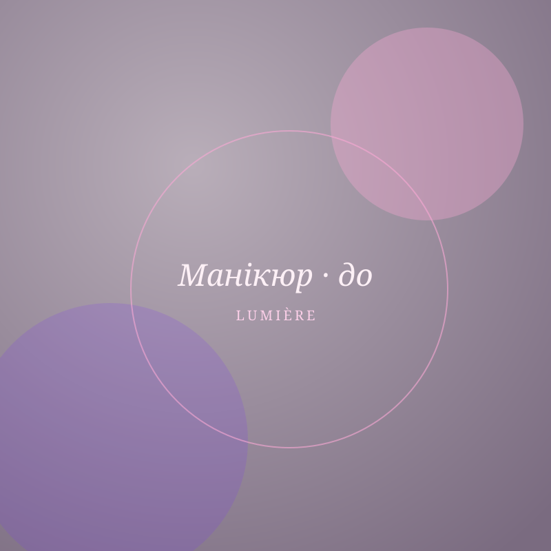
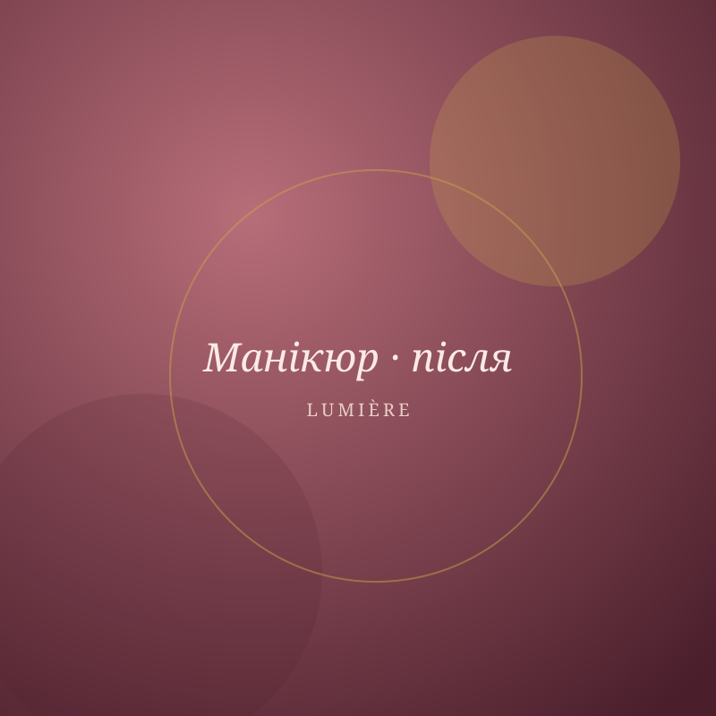
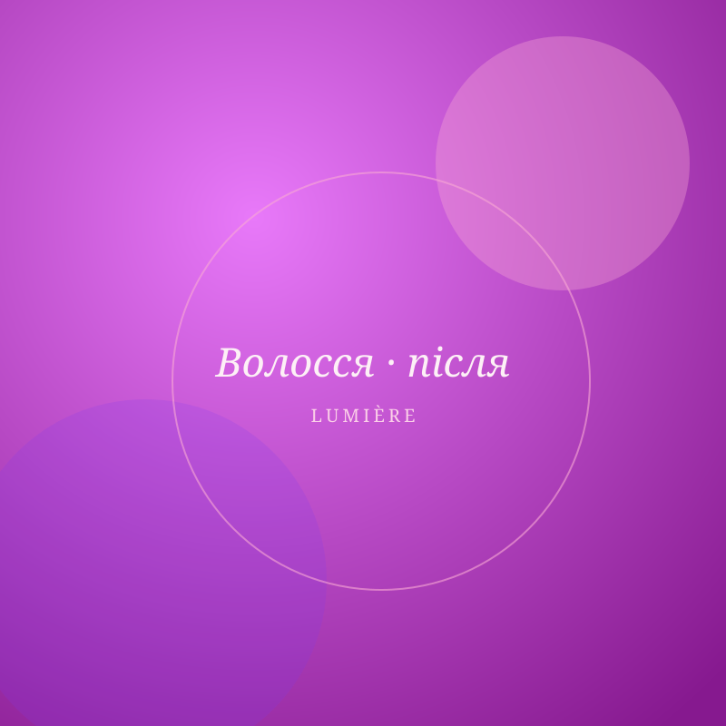
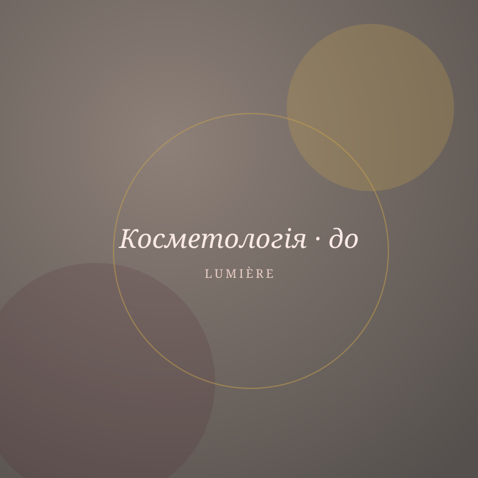
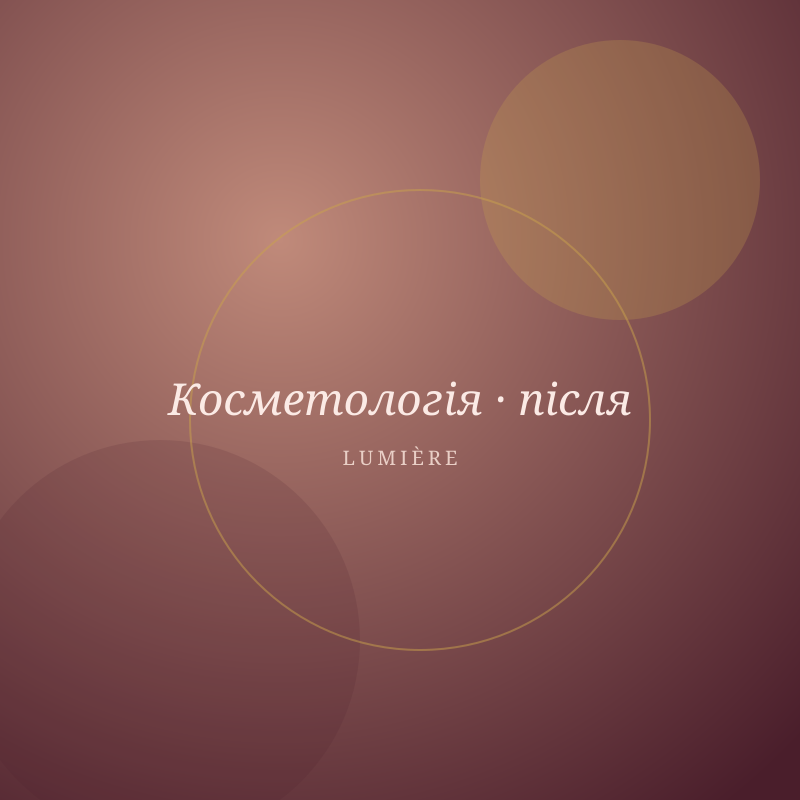
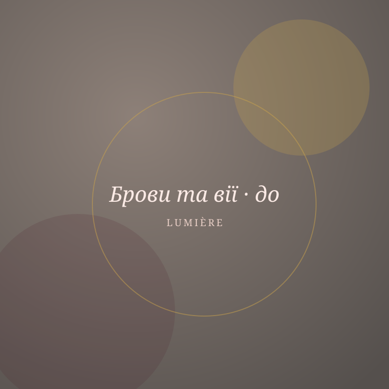
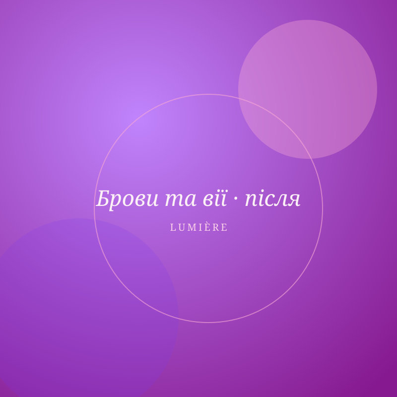

Манікюр з гель-лаком
майстер — Олена Кравець
Портфоліо
Перемикайте «До» / «Після» на кожній роботі, щоб побачити результат у «дзеркалі» — так, як його бачить клієнт у кріслі майстра.


Манікюр з гель-лаком
майстер — Олена Кравець


Нарощення нігтів
майстер — Олена Кравець


Складне фарбування AirTouch
майстер — Марина Шевчук

Ботокс для волосся
майстер — Дар’я Романюк


Комбінована чистка обличчя
майстер — Софія Гончар


Хімічний пілінг
майстер — Софія Гончар


Корекція та фарбування брів
майстер — Катерина Білан


Ламінування вій
майстер — Катерина Білан
Запишіться до майстра, чия робота вам сподобалась — онлайн за 2 хвилини.
Записатись онлайн